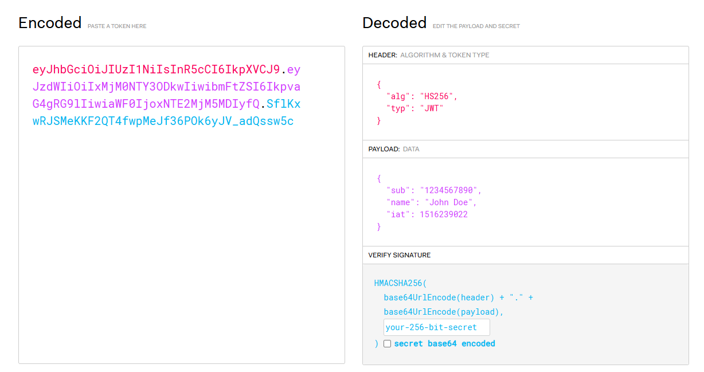

먼저 웹 보안이 뭘까요?
웹 보안은 웹 사이트나 웹 관련 서비스를 외부의 악의적인 공격이나 무단 접근으로부터 보호하기 위한 기술적, 관리적, 물리적 조치를 의미합니다.
저희 웹개발자는 물론 다른 부분도 신경을 써야하지만 주로 보안 취약점을 미리 발견하고 개선하여 사용자들이 문제없이 서비스를 사용할 수 있도록 개발을 해야합니다.
그러면 보안은 어떤게 있을까?
웹 보안은 여러 계층으로 나뉘는데, 방화벽이나 침입 탐지 시스템와 같은 네트워크 보안 단계부터 해서 서버 및 애플케이션 보안, 그리고 인증 및 인가 등이 있습니다.
우리가 오늘 알아 볼 부분은 가장 쉽게 구현이 가능하면서도, 아주 강력한 인증과 인가 기술와 이를 기반으로 한 JWT에 대해서 살펴보도록 하겠습니다.
인증과 인가
웹 보안의 핵심 요소 중 하나인 인증( authentication )은 사용자가 실제로 본인이 주장하는 사람인지를 확인하는 과정을 의미합니다. 일반적으로 로그인을 하는 과정을 인증이라고 합니다. 서비스에 들어가기 위해서 해당 유저인지 인증을 받는것이죠.
반면에 인가( authorization )는 인증을 거친 사용자가 웹 서비스 내에서 특정 페이지나 리소스, 기능 등 에 접근할 수 있는 권한을 부여하는 것을 의미합니다.
인증을 통해 로그인한 사용자에게 여러 페이지나 데이터를 제공하도록 인가를 해주는거죠. 이를 통해서 웹 주소만을 가지고 중간 페이지에 접속한다거나, 데이터를 빼가는 문제를 차단해줍니다.
인증과 인가의 영단어가 많이 헷갈릴 수 있는데, 서비스에 인증하려할때 어델!! → 어델!!티케이션..과 어서와~ → 어서와이제이션.. 이라고합니다. 너무 킹받아서 바로 외워졌던…
인가를 대표하는 JWT
기존에는 인가를 처리하려면 세션 저장 방식을 사용을 해야했습니다.
세션 저장 방식이란, 유저가 인증을 받게 되면 입장권을 반으로 찢어서 유저가 절반을 가져가고 서버가 나머지 절반을 나눠가지면서 인가가 필요할때마다 서로 대조를 하면서 확인을 하는 방식입니다.
세션은 여러가지 문제점을 가지고 있는데, 아래와 같은 크리티컬한 문제를 가지고 있습니다.
- 서버에 대해서 업무가 과중 될 수 있습니다. 서비스가 인가를 처리하는 프로세스는 하나인데, 수 만명이 몰리게 되면 병목 현상이 생기거나 에러가 발생할 수 있습니다.
- 보통 절반의 입장권은 웹에서 저장을 하기 때문에, 위와 같은 에러가 발생하게되면 데이터가 초기화 되면서 유저나 서버가 저장하고 있던 입장권이 날아갈 수 있습니다.
- MSA와 같이 다중 서버로 운영되는 서비스라면 각각의 서버마다 입장권을 복사해서 관리해야 하는 문제가 발생합니다. 이러한 중복 데이터는 서버 간 데이터 동기화 문제를 일으키고, 데이터 관리 비용을 증가시키는 단점으로 작용하게 됩니다.
이러한 세션의 문제들을 해결하기 위해서 등장한 것이 JWT입니다. JWT는 서버에서 별도의 세션을 유지하지 않아도, 토큰 자체에 사용자 정보와 권한 데이터를 포함하고 있습니다.
그 말인 즉슨, 인증과 인가가 된 유저 정보가 들어있는 토큰만 들고다닌다면 서버는 단순한 검증만 하면 되기 때문에 자유롭게 서비스가 이용 가능하다는 뜻이죠.
토큰은 어떻게 구성이 되어있을까?
토큰은 JWT.io 사이트에 들어가면 어떻게 생성이 되는지 알 수 있습니다.
이 사이트에서 제공하는 예시 토큰을 통해서 토큰의 구성을 알아 보도록 하겠습니다.
이미지의 왼쪽을 보면 유저가 실제로 가지고 다니는 인코딩되어있는 토큰 형태를 알 수 있습니다.
토큰은 . 을 통해서 3가지 분류로 나눠져 있는데요, 무슨 뜻인지 알려고 한다면 오른쪽과 같이 디코딩을 통해서 값을 확인 할 수 있습니다.
디코딩을 하고나니 3가지의 JSON 형태의 데이터를 확인 할 수 있는데요. // JWT, Json Web Token인 이유..
Header, Payload, Signature으로 구분이 됩니다.
그럼 각각의 의미를 한번 알아볼께요
Header에는 alg와 typ이 있습니다.
typ은 JWT라고 되어있는데 JWT의 토큰이라는것을 명시해줍니다.
alg는 알고리즘을 의미하며, HS256이나 RS256등 토큰을 암호화할때 필요한 알고리즘이 명시 되어 있습니다.
Payload에서는 다양한 유저의 정보를 확인 할 수 있습니다.
유저의 정보, 토큰의 만료시간, 발급자 등 을 통해서 사용자의 신원과 권한을 확인 할 수 있습니다.
Signature은 헤더와 페이로드를 조합하여 생성된 암호화된 문자열입니다.
서명이 중요한 이유는, 토큰을 발급할 당시의 정보를 가지고 알고리즘을 통해 토큰화를 한거기 때문에, 토큰 발급 이후에 header나 payload 값이 변경이 되면 서명의 값이랑 일치하지 않아 기존의 정보가 변조되지 않았음을 검증할 수 있는 데이터입니다.
ex) 초기 데이터 : HS256 + 옥진석 = abcd → Payload 탈취 후 수정 : HS256 + 진석옥 = dcba
→ 기존의 Header : HS256, Payload : 옥진석, Signature : abcd랑 다르기 때문에 인가되지 않음
그러면 JWT는 완벽한 보안 방식이 아닌가?
그렇다면 JWT는 완벽한 보안 도구이지 않는가?
여느 보안 도구들과 마찬가지로 JWT도 단점이 존재하기는 합니다.
가장 치명적인 단점이 토큰이라는 입장권은 서버에서 관리하는게 아니라 유저의 손에 쥐어주는것이기 때문에, 문제가 발생했을때 토큰을 강제로 만료시키거나 폐기하는 것이 쉽지 않습니다.
나중에 특정 문제로 인해 서비스의 인가 등급이 변경 되더라도, 이미 인가가 되어버린 토큰을 계속해서 활용해서 활동이 가능하다는 뜻이죠.
위와 같은 문제를 보완하기 위해 Access Token과 Refresh Token 개념이 도입되었습니다.
Access Token은 짧은 유효 기간을 가지고 있어서 탈취되더라도 빠르게 만료되어 서버의 개입 없이도 서비스 사용이 제한됩니다.
근데 그러면 짧은 Access Token 때문에 사용자가 다시 로그인을 해야 한다면 상당히 불편하겠죠?
이 문제를 해결하기 위해 Refresh Token이 도입되었습니다.
Refresh Token은 더 긴 유효 기간을 가지며, Access Token이 만료되었을 때 새로운 Access Token을 발급받는 데 사용됩니다.
사용자가 서버에 새 토큰을 요청하면, 서버는 Refresh Token의 유효성을 확인한 후 새로운 Access Token을 발급합니다.
이렇게 하면 사용자는 자주 로그인할 필요 없이 서비스를 이용할 수 있으면서도, 기존의 JWT 문제를 보완한 서비스가 완성됩니다.
마무리…
여기까지 봤을 때 JWT는 인증과 인가에 대해서 완벽해 보이지 않나요?
하지만 여전히 보안은 끝이없는 창과 방패의 싸움입니다. 누군가는 이런 보안체계를 뚫고 문제를 일으키려 할껍니다.
최근에는 JWT만으로는 부족한 상황에서 MFA라고 하는 다중 인증기술이나 메일로 2차 인증을 하게 하는 OTP와 같은 추가적인 보안 계층을 도입하는 추세입니다.
이러한 방식은 “내가 알고 있는 것”(비밀번호), “내가 가지고 있는 것”(휴대폰이나 보안 토큰), “내가 그 자체인 것”(지문이나 얼굴 인식)과 같은 여러 요소를 조합하여 보안을 강화합니다.
결국 돌아보면 완벽한 보안 솔루션은 존재하지 않습니다.
우리 개발자들은 항상 최신 보안 동향을 파악하고, 다양한 보안 계층을 적절히 조합하여 사용자의 데이터와 서비스를 보호해야 합니다.
JWT는 이 과정에서 단 하나 기술일 뿐, 보안의 전부가 아니라는 점을 기억해야 합니다.
웹 개발에서 보안은 선택이 아닌 필수입니다. 여러분의 서비스가 사용자에게 신뢰와 안전을 제공할 수 있도록, 보안에 대한 관심과 학습을 멈추지 마시길 바랍니다!